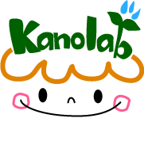

代表的な過去のプロジェクト
番組、政策対話、科学ポスター、実験教室、ミュージアム、イベント。研究の問いを社会の場で試してきた。
加納研究室の現在の三つの研究領域は、長年にわたる実践研究から生まれました。私たちは、社会へ何かを「届ける」だけでなく、番組、政策対話、ポスター、実験教室、ミュージアム学習、イベントの制作・実施過程を研究し、誰が参加したか、どのような問いと対話が生まれたか、何が届かなかったかを評価してきました。
各プロジェクトでは、目的、対象、共同機関、研究室の役割、方法、成果、受賞、現在の研究へのつながりを明示します。

NHK教育番組「考えるカラス」「カガクノミカタ」
加納圭は番組委員として、科学の知識だけでなく「見方・考え方」を伝える教育番組の制作・開発と研究面の支援に関与しました。番組の考え方を、学校授業、連動ワークショップ、カードゲーム、書籍へ発展させました。
対話型パブリックコメント（PESTI=Public Engagement with Science, Technology and Innovation Policyプロジェクト）
科学技術・イノベーション政策への市民参加を、意見の提出だけでなく、情報提供、対話、熟議、意見形成、政策接続を組み合わせるプロセスとして設計・評価しました。科学技術への関心が高くない人を含む参加のあり方を研究しました。
一家に1枚 ヒトゲノムマップ
文部科学省監修の学習資料として、ゲノム科学の全体像を一枚で俯瞰できるポスターを制作しました。加納圭は京都大学大学院生命科学研究科の制作チームのリーダーとして、代表的な遺伝子の位置と働き、ゲノム研究、医療、ELSIを一般の人々に伝える構成づくりに関わりました。英語版、改訂版、解説書、研究論文へ展開しています。
iPS細胞・ES細胞等の多能性幹細胞教育
高校生が多能性幹細胞の実験、仮説検証、研究者との対話、倫理・社会的論点に触れる実験教室を共同開発しました。その蓄積は、ボードゲーム教材「幹細胞研究やってみよう！」へ展開されました。
サイエンスカフェ／アート×サイエンスと参加者層評価
対話型イベントを、満足度だけでなく、参加意向と実際の参加者層、科学技術への関与、参加動機から評価しました。科学を前面に出さないアートや文化の入口が、誰に届くのかを研究しました。
ニフレルとの共同研究「予想外にふれる」
2020年、コロナ禍を契機に、加納研究室と生きているミュージアム「ニフレル」は、「With / Afterコロナ時代での社会教育施設（動物園・水族館）におけるアクティブラーニング手法の研究開発」を開始しました。来館できない状況でも、生きものの観察から不思議を見つけ、予想し、確かめ、さらに問いを深められる学びを共同で設計しました。
オンラインワークショップ「カピバラの予想外にふれる」「ペンギンと予想外にふれる」と近隣小学校での試行を経て、2024年7月から小学生向け学習プログラム「予想外にふれる」の運用が始まりました。プログラムは、来館前の動画とワーク、ニフレルでの観察、来館後のカルタづくりやランキング・グラフ活動をつなぐ三段階構成です。ものごとを多面的に見る力、疑問を言葉にする力、推論・考察する楽しさを育てます。動画、ワークシート、学習の手引きは無料で公開されています。企画は加納研究室とニフレル、監修は加納圭が担いました。
関連資料
NIFREL. (2024, July 11). 滋賀大学×ニフレル「予想外にふれる」学習プログラムがスタート！ https://www.nifrel.jp/eventnews/2024/07/post-194.html
滋賀大学教育学部. (2020, December 15). 第2回開催！教育学部 加納研究室×「NIFREL（ニフレル）」オンラインワークショップ「カピバラの予想外にふれる」参加者募集. https://www.edu.shiga-u.ac.jp/news/11438/
研究者・大学院生のための対話トレーニング
研究者が説明するだけでなく、相手の話を聴き、問いを共有し、異なる価値観のもとで対話するためのプログラムを開発してきました。「きく、伝える、分かち合う」を軸に、研修と書籍へ展開しています。
過去の実績を、現在の問いへ
- NHK番組制作の経験は、文化に根ざしたSTEAM教育とゲーム教材へ。
- PESTIの経験は、低関心層を含む公共参加とRRIへ。
- ヒトゲノムマップの経験は、複雑な科学の可視化、ゲノムリテラシー、先端生命科学と社会の対話へ。
- 幹細胞教育の経験は、最先端科学、ELSI、ゲームを通じた学びへ。
- 参加者層評価は、包摂的な科学コミュニケーションへ。
- ニフレル共同研究は、社会教育施設、オンラインと対面、生きもの観察をつなぐ探究学習デザインへ。
- 対話トレーニングは、研究者、教師、AI、政策をつなぐ協働へ。